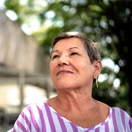
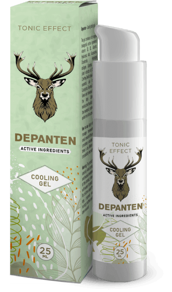

Поради болки в коленете и гърба едва можех да ходя. Хапчетата, инжекциите и операциите оказаха
никакъв ефект върху мен. Напротив: отнеха ми пари и енергия. Не знаех, какво да правя. За щастие
научих за това средство. И колко е хубаво, че го направих! Почувствах се по-добре от първия
прием. След месец или около там, чувствам се като нова. По много часове се
разхождам, грижа се за градината, която засадихме с внучката си. Болката е забравена. Благодаря!
★
★ ★ ★ ★
Маринела Георгиева, на 73 години

Простота и ефективност
Трудно е да се повярва, че такъв прост метод е толкова ефективен, достатъчно е да вземете
средството и след няколко дни да се насладите на движенията без дискомфорт. Сестра ми,
братовчедите ми и аз го използвахме и го препоръчваме на всички. Довиждане дискомфорт в ставите.
★
★ ★ ★ ★
Бети Варелова, на 67 години
Чувствам се нужен!
Години упорит труд в компанията доста потроши коленете ми. Обещах на внуците си, че ще играя
футбол или ще карам колело с тях, но не можах поради болка. Децата не разбираха тези неща и бяха
разстроени. Чувствах се безполезен. Докато дъщеря ми не ме накара да опитам . Веднага
усетих разликата. Мина един месец откакто го използвам и се чувствам неуязвима, сега мога да
прекарвам време със семейството си, особено с внуците си, както преди.
★ ★ ★ ★
★
Симеон Дерменджиев, на 67 години
Върнах си живота.
Наднорменото тегло и дългата стояща работа съсипаха коленете ми, не можех да понасям болката,
затова приемах повече от 10 хапчета на ден. Но се чувствах дрогирана и сънлива, не можех да
живея нормално. За щастие, колега от работата препоръча този невероятен продукт. Това се оказа
идеалното решение. Болката изчезна като магия и отново се увлякох с фризьорство. Възстанових
здравето си, което ми позволи да започна да тренирам и ... Свалих 10 килограма! Невероятна
промяна.
★ ★ ★
★ ★
Ана Попова, на 43 години
Жена ми спря да се оплаква.
Вкъщи жена ми винаги намира нещо за мен: да поправя кран, да преместя килер или да боядисам
нещо. Как трябваше да се навеждам и да се напрягам, ако гърбът ми ме излага? Както и лактите и
коленете. За щастие, гелът помогна на гръбнака и ставите ми да се
възстановят. Имах
чувството, че съм свалил теглото, което носех от години. Жена ми спря да се оплаква, че не искам
да й помагам из къщата!
★ ★ ★
★ ★
Сергей Руменов, на 67 години
Върнах се към работа
Представете си какво е да не си движите едната ръка. Трудно е, нали? Точно това ми се случи,
защото пръстите ме боляха, ръцете ми бяха подути и трепериха. Аз съм бижутер, това, което правя,
е моята работа и моята страст. Трябваше все по-често да затварям малката си работилница и това
влошаваше нещата с парите у дома. Започнах да търся методи за възстановяване на ставите и
навсякъде ми казваха, че най-добрият продукт e . Опитах, без да
го тествам, но
след 20 дни ръцете ми бяха по-здрави, отколкото преди 10 години. Успях да се
върна към работа!
★ ★ ★
★ ★
Румен Христов, на 55 години
Нов живот на толкова ниска цена
Обикновено, ако нещо е ефективно, то трябва да е скъпо. Такъв беше случаят с моя личен масажист,
който ми струваше две хиляди на месец и трябваше да върши чудеса. Напротив, това само влоши
нещата, а ставите и гръбнака ме боляха още повече. Когато зет ми ме посъветва да опитам
, мислех, че това е пълна глупост. Как може гелът да ми помогне,
когато уж
феноменален масажист не ми помогна? Само да бяхте ми видели лицето, когато болката
изчезна. Това е чудо!
★
★ ★ ★ ★
Румяна Пенелова на 67 години
Единственият ефективен метод
Опитах различни методи, за да се отърва от хрускането и болката в бедрата. Нищо не помогна. Още
по-лошото е, че дегенерацията се е разпространила в гръбначния стълб. С случи се
обратното. Вече не се притеснявам за здравето си, защото съм на 100% здрава!
★
★ ★ ★ ★
Ирина Минкова, на 59 години
След 14 дни ще забравите за болките в ставите и гръбнака – ефектът е
гарантиран от независими тестове
Здравейте!
Аз съм професор Борислав Рачев, учен и специалист по молекулярна биология. Тук искам да ви запозная с
най-голямото постижение в живота ми. Разработих метод, благодарение на който всеки може да премахне
болката, както и да възстанови ставите и гръбнака и заедно с това да възстанови 100% подвижност само за
14 дни.
Така че, ако искате, БЕЗ химически и неефективни средства:
Да премахнете болките в ставите и гръбначния стълб - да почувствате облекчение
веднага след прилагането на метода;
Да възстановите и укрепнете ставите, сухожилията, мускулите и гръбначния стълб на
87%, за да функционират като нови;
Да върнете 100% от физическото здраве и да не се страхувате да станете инвалид;
Да елиминирате сковаността и изтръпването в ставите и гръбначния стълб, да върнете
комфорта и плавността на движенията;
Да защитите ставите и гръбначния стълб от унищожаване и поддържане на абсолютно
физическо здраве в продължение на много години;
Да премахнете дегенерация, възпаление и др - да намалите болката и да върните
комфорта в движение;
Да възстановите тялото след фрактури, навяхвания и наранявания;
И благодарение на това да имате 3 пъти повече енергия и отново да се
радвате на живота!
Трябва да знаете, че всичко това може да се постигне без опасни операции, скъпо възстановяване,
безкрайно чакане на опашка за специалисти (които също се отказват, без да могат да направят нищо...) и
без гълтане на отровни химикали (вредни за черния дроб, стомаха и бъбреците)... и накрая, да
спестите хиляди лева. Ако искате да направите това, трябва да прочетете това, което искам
да ви кажа.
Няма значение на колко години сте или колко дълго страдате от болки в ставите или гръбнака. Няма
значение дали костите ви скърцат в продължение на 2 дни или 20 години. Дори ако специалистът ви е казал,
че ставите и гръбначният стълб са напълно унищожени и сте загубили всякаква надежда за нормален живот...
Трябва да знаете, че вече след 14 дни ще можете да се насладите на 100% подвижност. Без
болка!
Вижте защо моят метод е алтернатива на неефективните начини за борба с болките в ставите:
Облекчава болката веднага след прилагане и чрез 14 дни я елиминира
завинаги;
безопасен за тялото: макромолекулярната формула е под формата на 100% естествен
гел, който работи в пълна хармония с човешкото тяло.
възстановява дори най-увредените стави и гръбначния стълб така, че те функционират
като нови, без болка;
лесно се прилага и всеки може да мине курса у дома сам, вместо да чака в чакалните
на специалистите и да моли за помощ;
Позволява да спестите хиляди лева вместо да ги харчите за скъпи и неефективни
химикали и терапии.
Разработих естествен метод, който ще възстанови разрушените ви стави и гръбначен стълб
Благодарение на него ще забравите за болката и страха от пълна инвалидност... Всички
проблеми, от които страдате поради слаби стави или слаб гръбначен стълб, ще останат в миналото. Вие
напълно ще се отървете не само от болка, но и от скованост, спазми и подуване. И накрая, ще можете да
правите всички неща, които не бихте могли да направите поради болката.
Ще можете да се изкачвате по стълби, да се навеждате, да носите внуците си на ръце без проблеми. Можете
спокойно да се грижите за градината, да се разхождате, да карате колело, да танцувате! И всичко това се
дължи на разработката на иновативна формула за възстановяване на ставите и връщане към пълната
им подвижност. Как съм го направил това?
Исках да спася майка си от увреждане
Според последните проучвания всеки трети жител на България на възраст между 36 и 95 години има проблеми
със ставите или гръбначния стълб. Тези хора често дори не го осъзнават, те вярват, че е нормално, че
понякога тялото боли, изтръпва или прещраква. Повечето от тях обаче са изложени на риск от
значително унищожение на хрущяла и дегенерация, които могат да доведат до увреждане.
За съжаление този проблем засегна и майка ми. Отначало й беше трудно да се изкача по стълбите или да
става от дивана. Но после ситуацията се влоши... Градината, за която тя се грижеше с такова удоволствие,
започна да обраства с плевели, защото не можеше да се грижи за нея. Тя спря да ни кани на семейни
вечери. Тя ставаше все по-раздразнителна и тъжна. След това, поради болки в коленете, бедрата,
гръбначния стълб и лактите, тя дори не можеше да се изкъпе.
Това беше опасно за живота й!
Най-лошото беше, че неподвижността започна да заплашва живота й. Никога няма да забравя деня, в който
дойдох да взема майка ми, за да я заведа при специалист по гастроентерология. Майка ми просто трябваше
да пресече улицата и... едва не я блъсна кола! Тя вървеше много бавно поради болката и изведнъж коляното
й стана толкова неподвижно и болезнено, че тя не можеше да направя нито една крачка.
Шофьорът спря в последния момент...
Бях в ярост, когато видях чантата на мама пълна с различни рекламирани продукти за стави. Оказа се, че
тя ги приема с шепи. Така ми стана ясно, защо тя има стомашни язви, чернодробни проблеми и други
стомашни проблеми... Жената искаше да направи нещо, но тези средства не само не помагаха,
но и накрая отравяха тялото й.
Как съм измислил "патент" за неразрушими стави?
Трябваше да помогна на майка ми да си върне здравите стави, а с тях и здравето и радостта от живота.
Исках тя да бъде прекрасна баба на внуците ми, точно, както тя беше прекрасна майка за мен. Тогава си
помислих: "Човече, ти си учен! Участвал си в откриването на много вещества, които се борят с
различни заболявания. Защо пък да не разработя средство за укрепване на ставите?" Затова започнах
тестове...
В продължение на една година провеждах интензивни лабораторни изследвания. Тествах различни комбинации
от активни вещества на майка. Трябва да подчертая, че всичките те бяха 100% естествени и
безопасни за тялото. Вдъхнових се от монашеските билкови рецепти и ги комбинирах с
най-новите постижения в молекулярната биология. Научните знания, вярата в природата и щипка късмет бързо
се изплатиха: измислих уникална макромолекулна формула.
Веднага започнах да провеждам мащабни тестове. Ефективност 98% е потвърдена от
най-големите изследователски институти в Европа и САЩ! Още във фазата на тестване моята макромолекулна
формула естествено възстанови функциите на ставите и гръбначния стълб при хиляди доброволци.
Невероятни ефекти
Болката на майка ми отшумя веднага след приема на продукта. Радваше се, че вече не е измъчвана от
пулсираща болка в коляното. Но това беше само началото. След седмица ставите и гръбначният й стълб
спряха да хрускат и изтръпват. Тогава отокът в коленете и лактите изчезна, всички възпаления в ставите и
гръбначния стълб изчезнаха. Майка ми се върна към грижата за любимата си градина. Всички бяхме изумени,
когато тя изведнъж се качи на мотора и караше щастлива!
"Защо вървите толкова бавно?"- попита тя нетърпеливо, когато отидохме на вечеря като
семейство. Ние, просто, още не сме отбили навика да вървим бавно в нейно присъствие. След 3 седмици
майка ми щастливо призна: "Синко, ставите ми са здрави. Чувствам се толкова пъргава, колкото когато
бях млада! Ти си измислил средство за болки в ставите! На колко ли хора ще помогнеш!
Много съм ти благодарна". И наистина, майка ми на 85-ия си рожден ден танцуваше от щастие с
правнуците си. И гостите стояха с изтръщени очи, когато видяха в каква форма е!
Майка
ми напълно възстанови подвижността, а с нея и енергията и радостта от живота.
Досега влошаването на ставите и гръбначния стълб през годините беше неизбежно. Днес, с моята
макромолекулна формула, процесът на износване на ставите и прешлените на човешкия скелет може не само да
се забави, но и да се възстанови.
Позволете ми да ви обясня как точно работи моята супер ефективна формула за здрави стави. Този процес е
доста сложен, но ще се опитам да го обясня, така, че да е разбираем и за неспециалист.
Незабавно премахва болката и възстановява ставите 24 часа в денонощието
Ставите и гръбначният стълб се износват през годините, но те също се влошават поради наднормено тегло,
интензивна физическа работа, носене на тежки предмети, прекомерни спортове, наранявания и натъртвания.
Синовиалната течност и хрущялът се унищожават. Ставите са като ненамазана панта: те започват
непрекъснато да се търкат и разграждат. С течение на времето започвате да усещате скованост и ужасна
болка, която пречи на нормалното движение. Развива се възпаление и тежка дегенерация.
За съжаление клетките на хрущяла и синовиалната течност нямат способността да се самовъзстановяват. Това
означава, че за разлика от други клетки в човешкото тяло, те не могат да се върнат към живот. Ето защо
ставите и гръбначният стълб се влошават от ден на ден. Разбира се, няма да спрете да ходите и да
извършвате ежедневни дейности, за да защитите ставите и гръбначния стълб. Това би било абсурдно.
Така че моята задача беше да създам радикална формула, която ще премахне болката, ще възстанови
увредените стави и гръбначния стълб и ще ги предпази от бъдещи щети. И успях! Разработих
макромолекулярна формула за интензивна регенерация. Нарекох я .
Уникалната формула незабавно прониква в засегнатите области и изключва електрическите болкови
импулси на клетъчно ниво, за да можете да извършвате дейността без болка. Благодарение на
свойствата си, той стимулира клетъчното хранене, което възстановява регенеративните процеси с
300%. В същото време естествените съставки задействат процесите на автоматична регенерация
на хрущяла и синовиалната течност. Редовното прилагане на тази формула е достатъчно, за да може
регенерацията да се извършва 24 часа на ден. Правите това, което винаги правите, а ставите и гръбнака
стават по-млади и възстановяват подвижността. По този начин дегенерацията и болката изчезват завинаги
след 30 дни. Без странични ефекти!
Защо моята макромолекулна формула беше наречена "чудодейна противоотрова за болки в
ставите"?
ТЯ ПОВЕЧЕ ОТ 98% ЕФЕКТИВНО ВЪЗСТАНОВЯВА ХРУЩЯЛНАТА ТЪКАН И СИНОВИАЛНАТА ТЕЧНОСТ
ПРЕДИ
Разрушена и засегната от дегенерация и болка става
СЛЕД
Възстановена става: 100% здрава и без болка
Засега това може да изглежда като чудо. Това обаче е факт, който потвърждава случая на майка ми и 14
хиляди души, които вече са успели да възстановят здравите стави и гръбнака благодарение на моя метод.
Освен това, ефективността на макромолекулната формула е безусловно доказано от
български изследователски център в София. Това е откритие от световен мащаб, което спечели признанието и
възхищението на най-добрите специалисти в областта на ревматологията, ортопедията и неврологията. От
друга страна, продължавам да получавам емоционални писма от хора, които ми благодарят, че ги
възстанових; това е основната причина, поради която съм щастлив и горд от това откритие.
100% БЕЗОПАСЕН И ИЗКЛЮЧИТЕЛНО ЛЕСЕН ЗА ИЗПОЛЗВАНЕ
Естествените съставки правят чудеса: науката успя да създаде перфектния състав! Именно това мото ме
придружаваше при създаването на макромолекулна формула за възстановяване на ставите. Просто трябва
да нанасяте с кръгови масажни движения малко количество от продукта, докато се абсорбира напълно 2-3
пъти на ден, за да премахнете болката, а след това, ден след ден, се наслаждавайте на укрепването на
ставите и гръбначния стълб и се върнете към пълноценен живот! (Ефектът зависи от характеристиките на
всеки организъм)
Всички ваши приятели и роднини, които са свикнали да ви виждат в болка, едва ходещи, ще
бъдат изумени. Когато ви видят как бягате, карате колело и танцувате без болка, те няма да повярват, че
сте възстановили ставите си за 30 дни!
НЕЗАБАВНО ОБЛЕКЧАВАНЕ НА БОЛКАТА
ЕСТЕСТВЕНО ВЪЗСТАНОВЯВАНЕ БЕЗ СТРАНИЧНИ ЕФЕКТИ
ВЪЗСТАНОВЯВАНЕ НА СТАВИТЕ И ГРЪБНАЧНИЯ СТЪЛБ

ЛЕСНА УПОТРЕБА
100% ФИЗИЧЕСКИ ВЪЗМОЖНОСТИ ЗА 30 ДНИ
СПЕСТЯВАНЕ НА ХИЛЯДИ ЛЕВА
Как можете да пропуснете такава възможност да победите болката и да си върнете здравето
завинаги?
Може да продължите да страдате от ужасни болки в ставите и гръбначния стълб. Можете също така да
съсипете здравето си с вредна химия и да живеете с призрака на инвалидността, дебнещ зад гърба ви? Но
защо, ако ви гарантирам бърз, лесен и евтин начин възвърнете здравето си без болка?
Имате нужда само от 30 дни възстановяване, за да се присъедините към 14 000 доволни потребители на
, които вече са победили болката, възстановиха ставите и гръбначния стълб
и сега се
радват на доброто здраве!
Не рискувате нищо!
Използвайки , вие незабавно премахвате болката и възстановявате
физическата подвижност за
30 дни. И вие не рискувате нищо! Като световно постижение моята макромолекулна формула получи
престижна тройна гаранция: оригиналност, качество и удовлетворение.
Тройна гаранция за удовлетвореност
1. Гаранция за оригиналност: в макромолекулното средство
използва се
формула, базирана на най-мощните вещества, които възстановяват ставите и гръбначния стълб. Ефективността
му се потвърждава от лабораторни тестове. Това е единствената подобна иновативна формула. Следователно
можете да сте сигурни, че ще получите оригиналния продукт, достъпен само чрез този сайт.
2. Гаранция за качество: благодарение на усъвършенствания процес на производство на
макромолекулна формула, той отговаря на най-високите стандарти за качество. Като се има предвид вашето
здраве и благополучие, концентрацията на активните вещества е избрана по такъв начин, че
възстановяването да е напълно безопасно. И всичко това, за да може действието му да отговори на вашите
очаквания на 100%.
3. Гаранция за удовлетвореност: многобройни лабораторни и потребителски тестове
потвърждават повишената ефективност на . Благодарение на тези резултати
препаратът е
признат от специалисти от цял свят, които го препоръчват на своите пациенти. Те са убедени, че за 30 дни
ще се отървете от болки в ставите и гръбначния стълб, а също така ще си възвърнете 100% подвижност.
Забравете болката, възстановете ставите си и си върнете 100% физическо здраве за 30 дни
лесно, безопасно и икономично
Големите фармацевтични компании в САЩ и Япония буквално се борят за патент за моята макромолекулна
формула. Когато го продам, средството ще бъде наличен в световен мащаб, но разбира се на
непосилна цена.
Докато това не се случи, реших да го направя достъпен в България, като се обединих с дисконтен клуб
с 50% по-евтино финансиране. Всичко това, за да помогна на колкото се може повече хора
в моята родина да се отърват от проблемите със ставите и гръбначния стълб веднъж и завинаги.
Затова ви призовавам да се възползвате от тази възможност! Много е лесно да направите поръчка в
дисконтния клуб. Не е необходимо да изпращате пари или да плащате с карта, за да получите продукта.
Всичко, което трябва да направите, е да попълните формуляра за 2 минути и след няколко
дни ще получите пратка, за която ще ви бъде удобно да платите на пощата.
Благодаря, че отделихте време да прочетете съобщението ми. Пожелавам ви добро здраве в новия ви живот, в
който ще се радвате на доброто здраве и... Само след 30 дни ще танцувате, бягате,
карате колело и ще можете да правите всички неща, в които болката ви е ограничавала досега!
Професор Борислав Рачев
Вземете за участие в дисконтния клуб, отстъпка 50%
Налични
опаковки 0 0 7
Коментари:
Мартин Фиков
Историята на живота! Преминах през деветте кръга на ада в болницата,
през всички процедури и мъчения на въстановяването. Ставите боляха и продължаваха да болят.
Все още страдам със ставите. Къде мога да намеря този ?
Това средство не се продава в аптеките! Обиколих всички аптеки в
града! Поръчах оттук, препаратът дойде бързо, освен това тук предлагат и отстъпка. Започнах
курса :)
Претърпях две операции. Около шест месеца лежах, възстановяването беше
много дълго. Намерих и след месец забравих за операцията,
коленете
спряха да болят и да се подуват! Наистина добро средство без странични ефекти
Дядо ми мина курс на възстановяване с и
не
вземаше никакви други средства. Казва, че се е родил наново. Преди това той лежеше в леглото
по цял ден, а сега винаги прави нещо, винаги го виждам зает
Цял живот се занимавах с фигурно пързаляне, но трябваше да спра...
ставите много ме болят. Не отидох на специалист. Те предписват много скъпи средства, но няма
резултат. Имам късмет, че леля ми е експерт по терапия и ме посъветва да потърся .
Имах нужда само от 3 опаковки за пълно възстановяване!
Преди година нараних лявата си ръка, лакътът ме болеше постоянно. В
болницата искаха да ми направят операция. Уплаших се, отказах и отидох да търся алтернативни
решения. Баба ми ми даде , тя го използва за ставите и й
помага. След
първите няколко приложения болката намаля, но дискомфортът остана и след това средството
свърши... Ще поръчвам още)
Успях да възстановя хроничния артрит с помощта на ! Само за
един курс на възстановяване! Жена ми го купи за мен. Тя каза, че е чула за неговата
ефективност и е обиколила всички наши аптеки, а след това продавачът й е казал, че може да
го купите само онлайн.
Съгласен съм с всички коментари. Това средство наистина работи!
Колебаех се да го купя, опитах много мехлеми, средства и препарати. Ефектът винаги е бил
временен. След прилагане на ставите спряха да болят завинаги.
Възстановяването отне само малко повече от месец.


Коментари:
Мартин Фиков
Историята на живота! Преминах през деветте кръга на ада в болницата, през всички процедури и мъчения на въстановяването. Ставите боляха и продължаваха да болят. Все още страдам със ставите. Къде мога да намеря този ?
Елена Бъчварова
Това средство не се продава в аптеките! Обиколих всички аптеки в града! Поръчах оттук, препаратът дойде бързо, освен това тук предлагат и отстъпка. Започнах курса :)
Марин Велев
Претърпях две операции. Около шест месеца лежах, възстановяването беше много дълго. Намерих и след месец забравих за операцията, коленете спряха да болят и да се подуват! Наистина добро средство без странични ефекти
Елин Мечев
Дядо ми мина курс на възстановяване с и не вземаше никакви други средства. Казва, че се е родил наново. Преди това той лежеше в леглото по цял ден, а сега винаги прави нещо, винаги го виждам зает
Симеон Радков
Работя като треньор. Ставите ми често се нараняват и ми помага. Средството облекчава болката и бързо възстановява увредената става.
Соня Дейчева
Цял живот се занимавах с фигурно пързаляне, но трябваше да спра... ставите много ме болят. Не отидох на специалист. Те предписват много скъпи средства, но няма резултат. Имам късмет, че леля ми е експерт по терапия и ме посъветва да потърся . Имах нужда само от 3 опаковки за пълно възстановяване!
Камелия Велкова
Преди година нараних лявата си ръка, лакътът ме болеше постоянно. В болницата искаха да ми направят операция. Уплаших се, отказах и отидох да търся алтернативни решения. Баба ми ми даде , тя го използва за ставите и й помага. След първите няколко приложения болката намаля, но дискомфортът остана и след това средството свърши... Ще поръчвам още)
Еди Ненков
Успях да възстановя хроничния артрит с помощта на ! Само за един курс на възстановяване! Жена ми го купи за мен. Тя каза, че е чула за неговата ефективност и е обиколила всички наши аптеки, а след това продавачът й е казал, че може да го купите само онлайн.
Марко Коев
Съгласен съм с всички коментари. Това средство наистина работи! Колебаех се да го купя, опитах много мехлеми, средства и препарати. Ефектът винаги е бил временен. След прилагане на ставите спряха да болят завинаги. Възстановяването отне само малко повече от месец.